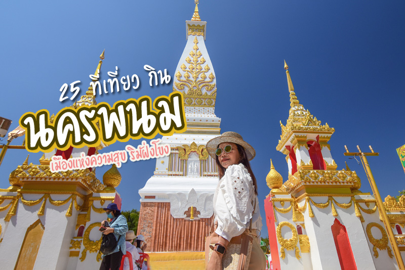
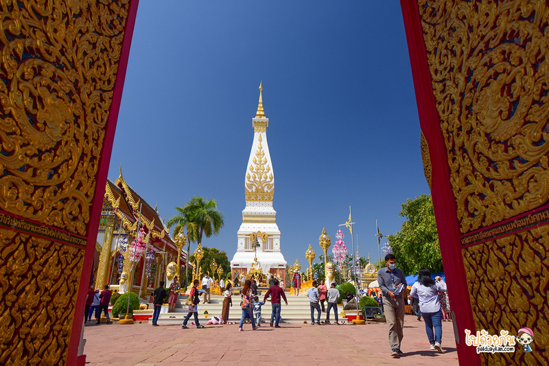
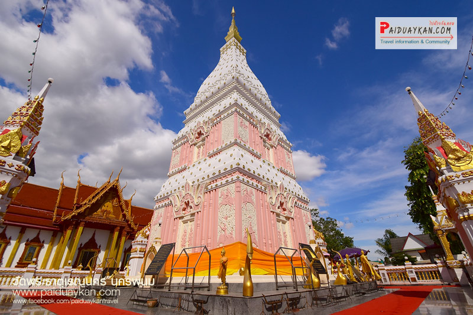
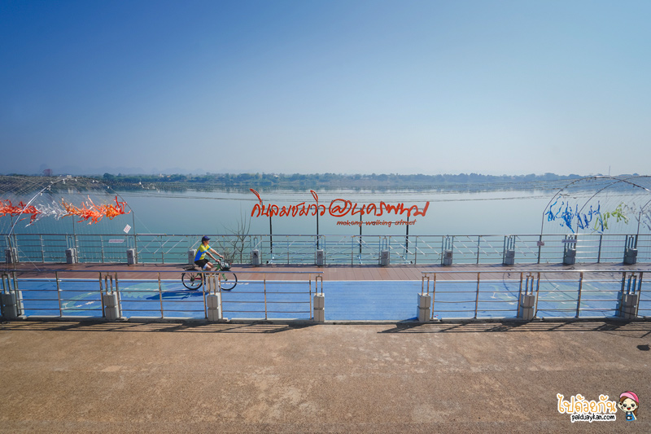

หน้าแรก
เกี่ยวกับจังหวัด
สถานที่เที่ยว
อาหารพื้นที่
นาย อัตพล ยมพ้วย 6404800007
3 ที่เที่ยวนครพนม เมืองแห่งความสุข ริมฝั่งโขง

พระธาตุพนม
พระธาตุพนม ประดิษฐานอยู่ในอำเภอธาตุพนม ณ วัดพระธาตุพนมวรมหาวิหาร เป็นพระธาตุประจำปีเกิดของปีวอกและผู้ที่เกิดวันอาทิตย์ พระธาตุพนมไม่เพียงแต่เป็นศูนย์รวมจิตใจของชาวนครพนมเท่านั้นยังเป็นที่ เคารพของชาวไทยภาคอื่น ๆ และชาวลาวอีกด้วย ว่ากันว่า ถ้าใครได้มานมัสการพระธาตุครบ 7 ครั้ง ถือว่าเป็น “ลูกพระธาตุ” เป็นสิริมงคลแก่ชีวิตและจะมีความเจริญรุ่งเรือง หรือแม้แต่การได้มากราบพระธาตุพนม 1 ครั้ง ถือเป็นมงคลแก่ชีวิตแล้ว

พระธาตุเรณูนคร
เมื่อมาสักการะพระธาตุพนมแล้ว แน่นอนต้องแวะมา พระธาตุเรณูนคร อีกหนึ่งพระธาตุศักดิ์สิทธิ์ขึ้นชื่อ พระธาตุเรณูนคร ประดิษฐานอยู่วัดพระธาตุเรณู องค์พระธาตุมีสีชมพูงดงามโดดเด่น เป็นพระธาตุประจำวันจันทร์เชื่อกันว่าผู้ที่ไปนมัสการจะได้รับอานิสงส์ ส่งผลให้มีวรรณะงดงาม ผุดผ่องดังแสงจันทร์ นอกจากนี้ภายในโบสถ์ยังประดิษฐานพระองค์แสน เป็นพระพุทธรูปทองคำศิลปะแบบลาวปางสมาธิ พระคู่บ้านของอำเภอเรณูนคร มีพุทธ ลักษณะสวยงามมาก

เที่ยวริมฝั่งโขง
มาถึงนครพนม อีกหนึ่งกิจกรรมห้ามพลาด คือ เข้าตัวเมืองนครพนม ชมบรรยากาศริมโขง ให้ผ่อนคลายสบายอารมณ์ นครพนมมีถนนที่ทอดยาวเรียบฝั่งแม่น้ำโขง ชื่อว่า ถนนสุนทรวิจิตร ถนนเส้นนี้ได้จัดทำเป็นเส้นทางเดินและเส้นทางจักรยาน บรรยากาศสุดชิล ลมพัดเย็นสบายโดยเฉพาะในฤดูหนาว อากาศเย็นราวกับเดินเที่ยวอยู่บนดอยในภาคเหนือ เหมาะสำหรับมาเดินเล่นสูดบรรยากาศบริสุทธิ์ในยามเช้าหรือยามเย็น ฝั่งตรงข้ามของถนนสุนทรวิตร คือ วิวทิวทัศน์ภูเขาหินปูนที่เรียงรายทางฝั่งลาว สวยสดงดงาม นอกจากนี้ยังมีสถานที่ท่องเที่ยวที่น่าสนใจที่ตั้งอยู่บริเวณเลียบโขงอีกหลายแห่ง ที่ไม่ควรพลาดแวะชม
